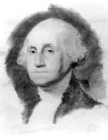

“Savaşta birinci, barışta birinci ve hemşerilerinin kalbinde birinci”
- George Washington’un cenazesinden bir methiye

George Washington (1732-1799) Amerikan Devrimi’nin askerî lideri ve Birleşik Devletler’in ilk başkanıydı. 1775’te devrimin patlak vermesinden evvel, Washington zengin Virginia tarlalarının sahibiydi. İngilizler’in yanında Fransızlar’a ve çeşitli yerli kabilelere karşı savaştı, ama 1760’larda ve 1770’lerin başlarında Kraliyet hâkimiyetine karşı tavrını koydu. Devrimin başladığı zamanda Washington, kendini adamış bir yurtseverdi. Kıta Kongresi tarafından oybirliğiyle isyan ordusunu yönetmesi için seçildi ve 3 Temmuz 1775’te Massachusetts’e bağlı Cambridge’te idareyi ele aldı.
Kağıt üzerinde Washington’un görevi neredeyse imkânsız görünüyordu. 1775’te İngiltere dünyadaki en güçlü ülkeydi. İyi eğitimli orduları ve paralı askerleri ile Avrupa’nın en iyileri arasındaydı. Böyle bir hasma karşı Washington, sadece birkaç kısa süreli zafer umabilirdi. Onun yerine Washington doğru bir şekilde, bariz yenilgilerden kaçınarak İngilizleri yıpratacağını hesapladı. İngiltere’nin isyankâr sömürgelerine gönderdiği birliklerin sayısına aldırmaksızın, sömürgedekiler sürekli savaştı. Washington’un ısrarı Fransa’yı, İspanya’yı ve Hollanda’yı sömürgedekilerle ittifak kurmaya ikna etti. Sonunda pes eden İngiltere oldu. Devrim hayatlarındaki görece küçük bir vergiye nazaran çok büyük kıymetteydi. İngiltere’ye karşı olan tüm savaş boyunca yurtsever ordu 6.824 insanını kaybetti ki bu, Birleşik Devletler’in sonraki savaşlarda feda ettiklerinin yanında küçük bir miktardı.
Washington’un dikkatli liderliği ona, bağımsızlığına yeni kavuşan ülkesinde olağanüstü bir popülerlik kazandırdı. Fakat o, gücü ele geçirmek yerine emekli olup Virginia tarlalarına, Vernon Dağı’na çekildi. Washington sonunda 1789’da başkanlık seçimlerine katılmayı kabul etti ve herhangi bir muhalefetle karşılaşmadan seçildi.
Başkan olarak Washington’un en büyük mirası yaptıkları değil yapmadıklarıdır. Görevdeyken, gelecek başkanlara rehberlik edecek gelenekleri bilinçli bir şekilde oluşturdu. Fiyakalı unvanları reddetti, yerine bir cumhuriyetçi ülkede sadece “Bay Başkan” olarak çağrılması gerektiğinde ısrar etti. 1796’da üçüncü dönem görev almayı reddetti ve Franklin D. Roosevelt’in üçüncü dönem iktidarı istediği 1940’a kadar başkanlar tarafından uyulan, yazılı olmayan bir kural oluşturdu. Washington 1799’da öldüğünde Amerikalılar “ülkelerinin babası”nın kaybıyla yasa boğuldular.
EK BİLGİLER:
1. On iki ABD başkanı general rütbesini almıştır. 1953’ten 1961’e kadar hizmet eden II. Dünya Savaşı kumandanı Dwight D. Eisenhower bu başkanların sonuncusuydu.
2. Başkan olarak Washington, Amerikan hükümetinin temel yapı taşlarının çoğunu kuran yasaları imzaladı. İlk döneminde Washington tarafından imzalanan kanunlar, doları ABD’nin resmi para birimi yaptı, ulusun başkenti için bir şehir kurdu ve kendisine tavsiyelerde bulunacak bir bakanlar kurulu oluşturdu.
3. Washington köleliği gayriahlaki bir şey olarak gördü fakat kendisinin de köleleri vardı ve hayatı boyunca, diğerlerine örnek olması için onları serbest bırakması yönündeki tavsiyeleri reddetti. Bu Washington’ın iradesine kalmıştı ve o da bu şekilde hareket etti.